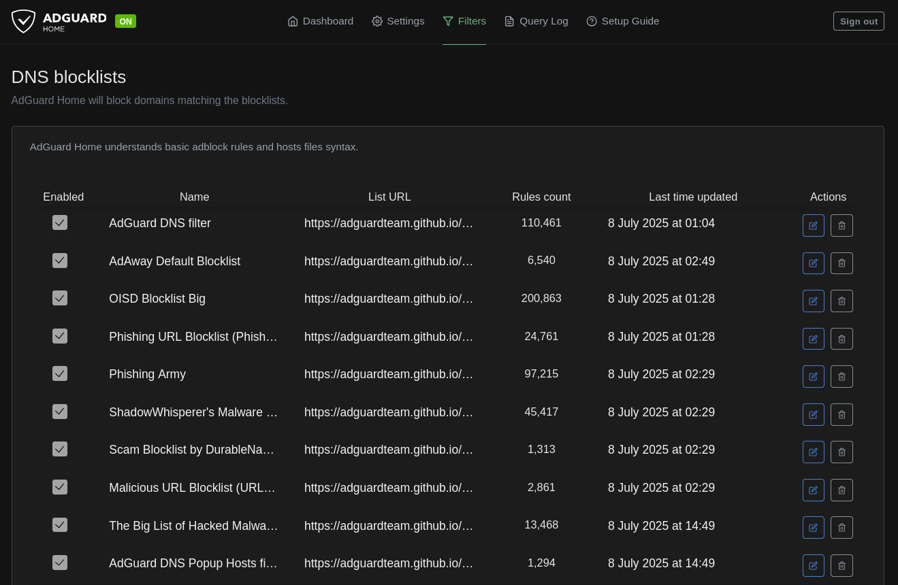
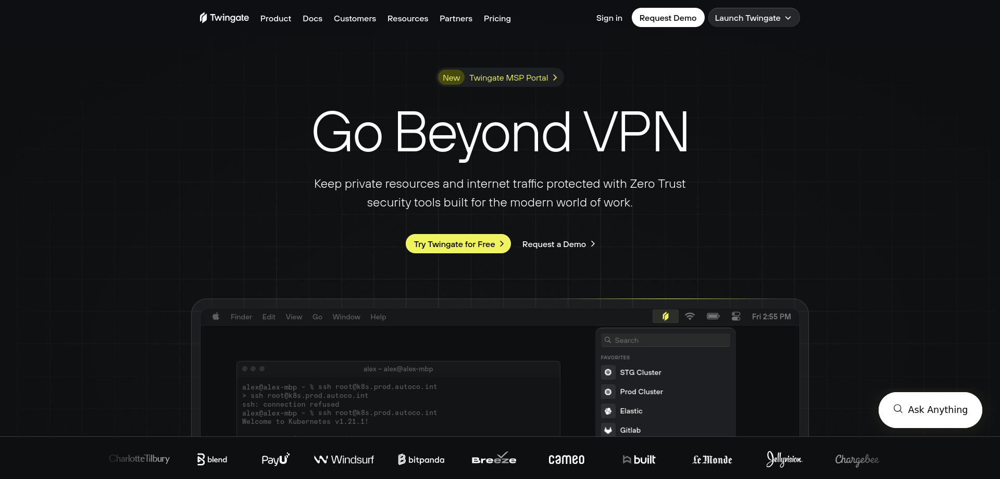
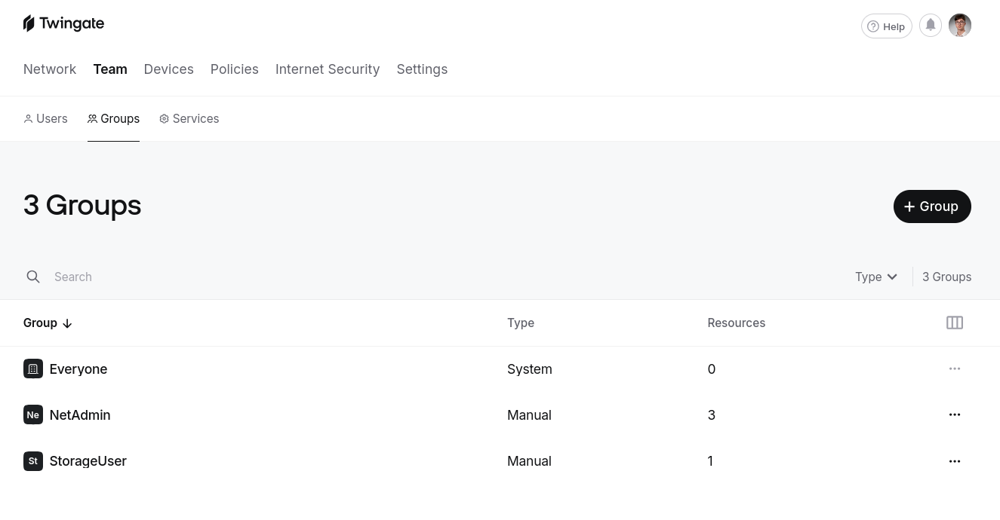
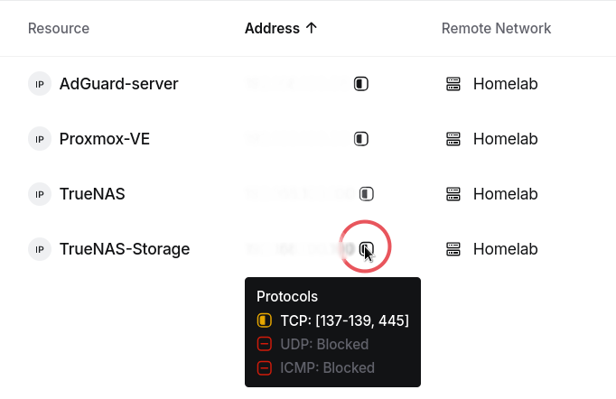

Welcome to my personal website
About Me
My name is Daniel Molda. I am a 20-year-old graduate of Information and Network Technologies from the Secondary Vocational School in Handlová.
I am mainly interested in Linux, computer networking, and server administration. I also enjoy programming and learning about new technologies.
In 2025, I began studying at the University of Žilina (Žilinská univerzita v Žiline), at the Faculty of Management Science and Informatics (Fakulta riadenia a informatiky), where I study computer science. My goal is to focus primarily on server administration, networking, and related technologies.
Alongside my studies, I work as a radio technician at the student organization RádioX, where I also help with IT-related tasks. I also volunteer at the Free Time Center in Prievidza, where I help organize and prepare various events. In my free time, I enjoy photography and play bass guitar in a band.
View My CVExpertise
| Area | Proficiency Level |
|---|---|
| Linux (Debian-based) | Advanced |
| Networking (Cisco IOS) | Intermediate |
| Zabbix | Basic |
| Python | Intermediate |
| Java | Intermediate |
| C (Programming Language) | Basic |
| Hardware | Intermediate |
| Web Development (HTML, CSS, JavaScript, PHP) | Intermediate |
Proxmox Homelab
About the Device I Use
I installed Proxmox VE 8.4 on an unused desktop PC. It is an HP M01-F1003nc equipped with an Intel Core i5-10400F processor (Comet Lake, up to 4.3 GHz), an NVIDIA GeForce GTX 1650 Super with 4 GB of VRAM, 8 GB of DDR4 RAM, and a 512 GB SSD. The installation was challenging because of HP's limited Linux compatibility. I had to modify the boot parameters to get the installer running and manually install the bootloader in rescue mode to complete the setup.
I currently run two LXC containers: a Twingate connector and AdGuard Home. In addition, I run several virtual machines, including a TrueNAS Scale server for network-attached storage and a Parrot Security virtual machine for penetration testing.
Cybersecurity Homelab
I have set up a Parrot Security Linux virtual machine on my Proxmox VE hypervisor. It comes with a wide range of penetration testing and security tools. I also run virtual machines with Windows 10, Linux Mint hosting an Apache2 website, and Fedora Server, which I currently do not have a specific use for.
Over the next few weeks, I intend to configure various vulnerabilities and insecure settings within these guest systems to create a controlled environment for practicing security testing, exploitation techniques, and the use of offensive security tools. I have already created an autorun script that establishes a reverse shell using Netcat between two Linux systems, but I would like to build something more complex in the future.
BSD
I wanted to gain more experience with BSD and other real UNIX-based operating systems, rather than working only with UNIX-like systems such as Linux distributions. I am interested in how BSD differs from Linux, particularly in areas such as system structure, networking, and security.
I set up FreeBSD in a virtual machine and learned how package management and user management work compared to Linux. I plan to explore FreeBSD further in the future. I would also like to try OpenBSD and NetBSD, as they have different focuses and strengths. I believe that learning about BSD will give me a broader understanding of operating systems and help me become a better system administrator.
I have not done much with BSD yet because of time limitations, but I am sure that I want to explore it further in the future.
My Linux and Hardware Journey
My experience with Linux is quite broad. I have worked with Debian-based distributions such as Ubuntu, both desktop and server editions, and Linux Mint, as well as Arch Linux.
I am experienced in using SSH for remote administration and server maintenance. I have also used various system monitoring tools, including Glances, top, and htop.
I have been working with laptops since 2022. I currently use Debian as my daily operating system on a Lenovo ThinkPad T480s, which I have owned since December 2024.
Before switching to Debian, I used Arch Linux with KDE Plasma and later Hyprland. While exploring Linux distributions and upgrading my laptops, I replaced the battery and installed Linux Mint on a Toshiba laptop.
I plan to upgrade the RAM in both laptops and replace the fan in the Toshiba because it is starting to wear out. I enjoy working on my laptops because it gives me an opportunity to learn more about computer hardware and experiment with different Linux distributions.
My Laptops and Linux Distributions
| Laptop/PC | Linux Distribution |
|---|---|
| Lenovo ThinkPad T480s |
Arch (KDE, Hyprland)
Debian (GNOME)
|
| Toshiba Portege Z830 |
Linux Mint (Cinnamon, Xfce)
Fedora Workstation (GNOME)
|
| Asus X51R |
Fedora Workstation (GNOME)
|
| Proxmox VM (HP M01-F1003nc) |
Ubuntu Server (Terminal)
Fedora Server (Web UI, Terminal)
TrueNAS Scale (Web UI, Terminal)
|
Self-Hosted DNS Server

I self-host AdGuard Home to block advertisements and protect my devices from online threats. It filters malicious domains, improves privacy, and helps keep my entire network safer without relying on third-party DNS services.

I chose AdGuard Home because it provides a clean and intuitive web interface that makes configuration and management straightforward. Its simplicity was an important factor because I wanted a reliable DNS solution without unnecessary complexity.
I configured custom upstream DNS servers to provide fast and secure domain resolution. I also enabled several DNS blocklists to block advertisements, phishing attempts, tracking services, and other malicious websites.
This setup helps protect every device on my network while also improving browsing speed and privacy.
Network Monitoring with Zabbix
I set up Zabbix to monitor my home network and servers. It provides real-time information about system performance and network activity.
With Zabbix, I can monitor important metrics such as CPU load, memory usage, disk space, and network traffic across my devices. Its customizable dashboards provide a clear overview of the current state of my systems.
Overall, Zabbix has become a valuable tool for maintaining the reliability and efficiency of my home network.

Secure Tunnel to My Local Network

Twingate is a modern and secure remote access solution that provides an alternative to traditional VPNs. It allows users to securely connect to private resources such as internal servers, applications, and databases without exposing the entire network.
Twingate uses a zero-trust approach, meaning that each user or device receives access only to the resources they actually need.

To enable secure remote access with Twingate, I set up a dedicated virtual machine on my Proxmox server. The VM runs a Docker container with the Twingate Connector, which acts as a secure gateway between Twingate and my private network.

After creating the VM, I installed Docker and deployed the Twingate Connector using the configuration provided in the Twingate administration panel. The setup was simple and efficient. I registered the Connector with my Twingate network, copied the automatically generated Docker run command, and launched the container.
Once running, the Connector established a secure, encrypted connection to Twingate's cloud infrastructure. This allows authorized users to access my TrueNAS server on ports 137-139 and 445 (SMB).
As the administrator, I can also manage internal services such as AdGuard Home, TrueNAS, and Proxmox web interfaces without exposing any part of my local network directly to the public internet.
Atari 130XE and the BASIC Programming Language
I recently got an old Atari 130XE from my dad's uncle, along with several game tapes, a tape recorder, and two joysticks. I have not played any of the games yet because I could not get them to run. The tape recorder probably needs to have its playback head cleaned.
I was still excited to try programming on the computer. In just half an hour, I wrote my own BASIC program that displays my name inside a flashing box.
I really enjoy working with retro 8-bit computers. It is a fun way to experience the technology and programming of earlier generations.
Exploring Tails OS
Tails (The Amnesic Incognito Live System) is a security-focused, Debian-based Linux distribution designed to protect privacy and anonymity.
I discovered Tails while researching privacy-focused Linux systems. It runs entirely from a USB drive or DVD and primarily uses the computer's RAM, leaving no trace on the host system by default. This makes it useful for privacy-conscious browsing and other activities where minimizing local traces is important.
One of Tails' core features is its integration with the Tor network. The operating system includes the Tor Browser, which anonymizes internet traffic by routing it through a volunteer-operated network of relays. This makes it significantly more difficult for websites and other observers to determine your original IP address.
Tails also provides an "amnesic" environment, meaning that data is not normally retained between sessions unless you explicitly choose to save it. However, Tails supports optional encrypted persistent storage.
Persistent storage allows you to securely save selected files, system settings, additional software, and personal data on the USB drive. The storage is protected and can only be accessed after entering the appropriate passphrase during startup.
In my personal setup, I have enabled persistent storage to install and explore various penetration testing, social engineering, and cybersecurity tools. Tails provides an isolated environment for learning about digital privacy, anonymity, and ethical security practices without modifying the host operating system.
Linux Web Server

This project was part of my maturita exam. It focused on installing and configuring a Linux server for hosting a website. I used a ZimaBoard, a compact single-board computer designed for various server and home-lab applications.
The project included installing and configuring Apache2, setting up remote access through SSH, securing the server with the UFW firewall, and using PHPMailer to send emails securely.
The main goal was to configure a Linux web server and create a simple website using PHP as the backend. Working with a physical server gave me a better understanding of hardware, server administration, networking, and system security.
Compared to conventional web hosting, running my own physical server gave me much greater control over the system's configuration and security.
View Project on GitHub